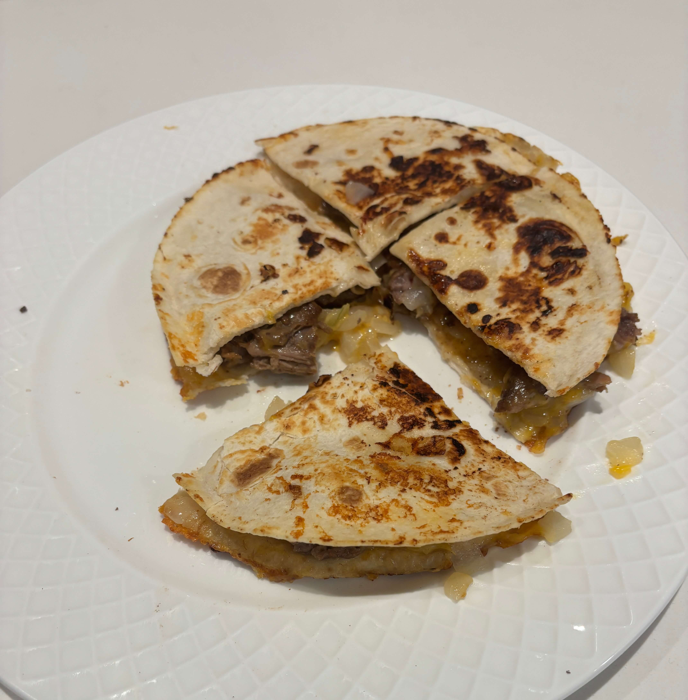

Home
Steak Quesadilla

Ingredients
- Skirt steak
- Extra virgin olive oil
- Salt and pepper
- Lime juice
- 2 medium tortillas
- Shredded extra sharp cheddar
- Chopped white onions
Steps
- Prepare the steak by covering it in oil and seasoning with salt and pepper.
- Place the steak in a pan on medium high heat for about 5 minutes each side. Use a pan lid to help with oil splatter.
- After the steak is done cooking chop the steak into chunks.
- In a new pan or after draining the first pan place a tortilla down and sprinkle the cheese, onions, and steak then cover with another tortilla.
- Cook and flip the quesadilla until both sides are golden brown.
- Cut into fourths and serve.